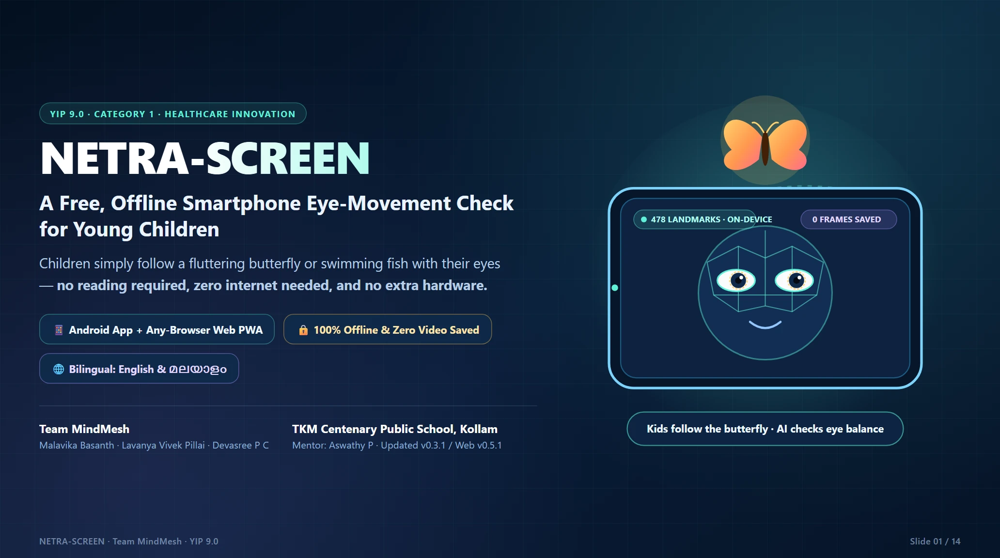

TEAM MINDMESH / YIP 9.0
YIP project pitch
The original 14-slide project deck: the problem, idea, working model, team and next steps.

1 / 14
NETRA-SCREEN
Read slide text
Loading slide text…
Original YIP project deck. For the current engineering snapshot and partnership plan, open the investor pack.